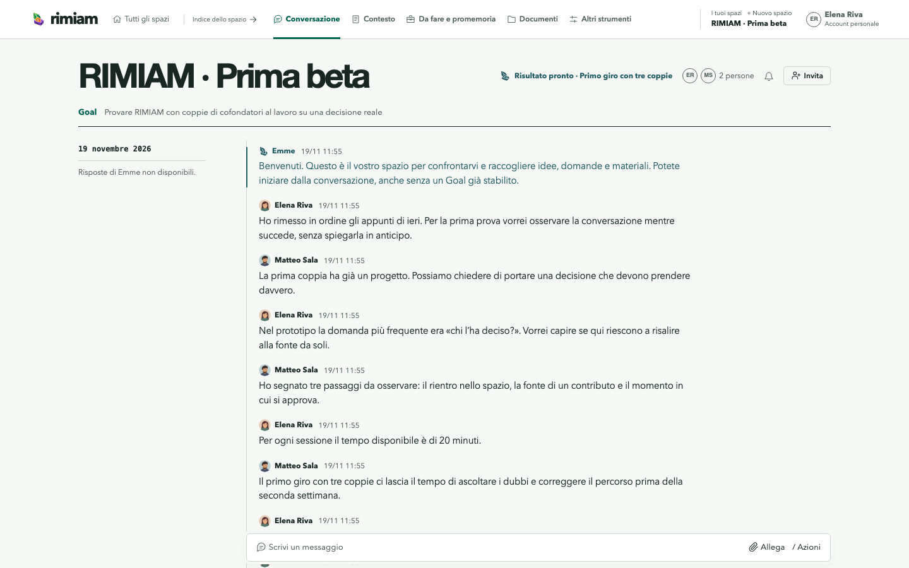
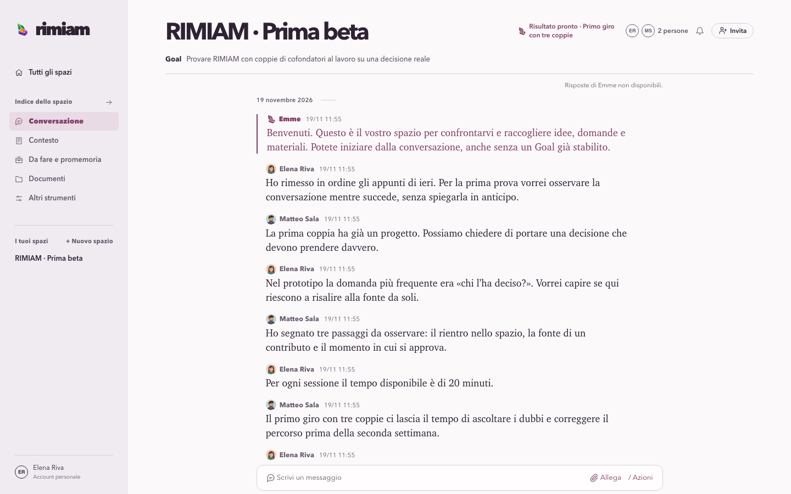

Attuale

I nomi in margine guidano la lettura. Nell’intestazione spicca «Invita», anche dopo la decisione del gruppo.
Rientro di Elena · RIMIAM, prima beta · 1440 × 900 px
I nomi in margine guidano la lettura. Nell’intestazione spicca «Invita», anche dopo la decisione del gruppo.

Navigazione orizzontale, caratteri senza grazie e turni compatti. La conversazione ha il ritmo di un registro di lavoro.

Caratteri con le grazie e più spazio tra i turni. Ogni intervento invita a soffermarsi, a costo di qualche scorrimento in più.
Partirei da Traccia. La densità aiuta a rivedere più passaggi insieme. Sceglierei Voci se nella prova emerge una preferenza per una lettura più distesa.
Sul computer ogni messaggio porta immagine, nome, data e ora. Sul telefono resta il nome. Un separatore indica l’inizio della giornata o la ripresa dopo una lunga pausa. Confronta computer e telefono ↗
In entrambe le prove puoi riconoscere Emme dal nome e dal testo colorati, usare «Vai in fondo», aprire la decisione dalla riga in chat e controllare le due approvazioni. Sul desktop il dettaglio si affianca al dialogo. Prova «Allarga», poi «Chiudi». La prova è circoscritta alla conversazione.